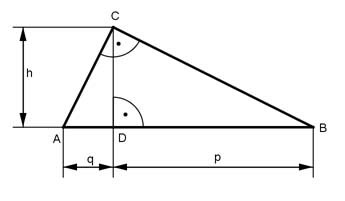

Pythagoras Aufgabe 65 Von einem rechtwinkligen Dreieck sind die Höhe h = 5 cm und der Hypotenusenabschnitt q = 3 cm gegeben. Berechnen Sie die Länge der Seiten a, b und c in cm und die Fläche A in cm².  Satz von Pythagoras im Dreieck ADC: AC² = h² + q² AC² = 5² cm² + 3² cm² = 34 cm² |√ b = 5,8 cm Höhensatz: h² = q * p | :q h² p = ---- q 25 cm² p = --------- = 8,3 cm 3 cm c = q + p = 3 cm + 8,3 cm = 11,3 cm Satz von Pythagoras im Dreieck DBC : BC² = h² + p² BC² = 5² cm² + 8,3² cm² = 93,9 cm² |√ a = 9,7 cm AC * BC 9,7 cm * 5,8 cm A = --------- = ----------------- = 28,3 cm² 2 2